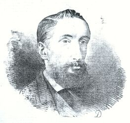

(14/4/1840-3/12/1877)

Augustus Asplet Le Gros 'tait fis d'Édouard Le Gros et d'Mary Elizabeth Asplet - né à St. Hélyi d'eune vielle fanmil'ye St. Louothachaise. (Tchuthieusement assez, pus tard il êp'lit san deuxième nom "Aspley".) Ayant pèrdu ses pathents, à l'âge dé chînq ou siex ans, i' fut êl'vé par san grand-péthe Élie Aspliet à "Allandale", St. Nicolas, pâraisse dé St. Pièrre. Ch'la, sans doute, est la raison dé san d'vis St. Pièrrais ("Vrais Jerriais nès..." auve l'e ouvèrt) et d'sén êp'lage tchiquefais Mouaîtîn ("De leux jergon, et d'leux pays ... ").
A. A. Le Gros fut êdutchi au Collège Victoria et pis s'mînt à êtudier la louai pouor tchiques années dans eune office d'Êcrivain, Mais s'n întéthét dans la fèrméthie l'fit laîssi couôrre tout et s'mettre à labouother la tèrre dé san grand-péthe à St- Pièrre. Étant un membre acti du Conmité d'La Socîété Rouoyale Agricole et Horticole, il en d'vînt l'Ségrétaithe en 1865. En 1873 i' fut élu à l'unanimité Connétabl'ye d'St. Pièrre, et en 1875 i' fut élu Juge dé la Cour Rouoyale. I' fut r'connu comme étant progessif et fut un Juge scrupuleusement impartial et consciencieux.
D'pis san janne temps i' s'întérêssait dans l'histouaithe dé Jèrri. Pus tard dans sa courte vie i' fut membre dé bein des sociétés archéologiques dé Nouormandie et d'Brétangne. Et i' fut en grand' partie responsabl'ye pouor la fondâtion d'La Société Jèrriaise en 1873. Il en fut l'preunmié ségrétaithe, y travaillant dû jusqu'à sa mort. I' c'menchit un dictionnaithe dé la langue Jèrriaise tchi fut compliété pus tard, et à la fîn publié par un conmité d'La Société Jèrriaise comme le "Glossaire du Patois Jersiais". Il avait un don pouor la poêsie et en composit hardi, en Jèrriais, en Français et en Angliais. Et ses vèrsets 'taient souvent dé natuthe èrligieuse, car il 'tait, comme fut dit à sa mort, un chrétchien sîncéthe et pieux. Entr'autres dé ses publyicâtions y'eut "La Nouvelle Année" - un voleunme annuel dé vèrsets par li-méme et ses anmîns - pouor huit ans d'temps. Et pis, en Angliais, "Poems for Home and Fireside", London, 1863, et "Poems", London, 1868. Dé 1865 à 1877 nou trouve dé ses poêsies en Jèrriais dans l'Almonnas d'la Nouvelle Chronique, et ailleurs. I' publiyit étout "Mont Orgueil Castle: Its History and Ruins". I' mathyit (1) Eliza Jane, fil'ye dé Philippe Payn, et (2) Alice Marguérite Collas, chette-chîn étant méthe dé la seule éfant, Marie Louise.
I' mouothit, acouo janne et bein èrgretté, à l'âge dé 37 ans.
Eune notice biographique dé li dans l'Bulletîn Annuel dé La Société Jèrriaise pouor 1878 dit :- "Son aménité, sa bonhomie, son heureux caractère lui avaient gagné tous les coeurs : son patriotisme et son intelligence le faisaient admirer de tous. Toujours prét à faire le bien... Imbu fortement de sentiments religieux, mais exempt de toute bigoterie, il remplit avec exactitude les devoirs d'un chrétien sincère et pieux... D'une constitution frêle, ses forces physiques étaient loin de correspondre à sa puissance intellectuelle... et s'il n'a pas assez vécu pour ses contemporains, il a fait assez pour vivre dans la mémoire et l'admiration de ses compatriotes."